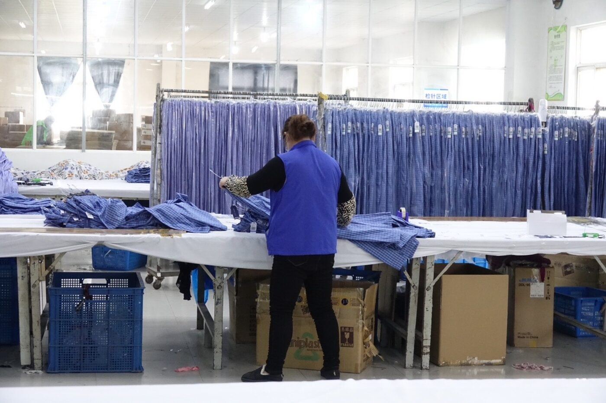
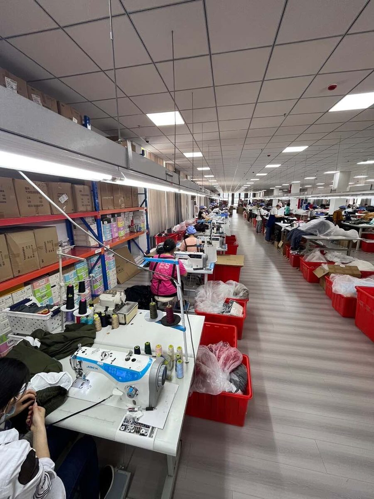

What We Do私たちができること
「何を造るか」から、
「どう創るか」まで。
ものづくりは、企画を決めることから始まり、調達、生産、検品、物流を経て、お客様の手元に届きます。NEXLINKは、日本の事業者様と中国の現場のあいだに立ち、その一つひとつをつなぐ実務パートナーです。
At a Glance数字で見るNEXLINK
17年以上
中国貿易の実績
2拠点
東京 ／ 南通
2018年
設立
ISO9001
品質認証（グループ会社）
Business事業内容
企画から輸入まで、
一つの窓口で。
01
企画・仕様整理
02
調達・原価管理
03
生産
04
検品
05
物流・輸入
Network拠点
Tokyo
Nantong
HEAD OFFICE
東京本社（麹町）
お客様のご相談窓口。仕様の整理、お見積り、進行管理をご案内します。
GROUP / CHINA
南通（グループ会社）
自社ビル・自社倉庫を備え、生産監視・検品を担います。ISO9001:2015認証取得。


MovieNEXLINK サービス紹介
Newsニュース
2026.08.03
INFO
【お盆休暇のお知らせ】8月10日（月）・12日（水）は営業、8月11日（火）・13日（木）・14日（金）は休暇とさせていただきます。
2026.04.13
INFO
【ゴールデンウィーク休業のお知らせ】4月29日（水）、5月2日（土）〜5月6日（水）まで休業いたします。
2025.12.04
INFO
【年末年始休業のお知らせ】12/27(木)～1/4(木)まで休業いたします。
2025.12.01
PRESS
新サイトOPENしました。
2025.10.24
UPDATE
東京事務所へ移転しました。
2025.10.01
INFO
【展示会出展】10月開催の「FaW TOKYOファッションワールド」に出展いたします。
Contactお問い合わせ
まずは、
ご相談ください。
ご相談は無料です。仕様やイメージが固まっていない段階でも、お気軽にご連絡ください。
お問い合わせフォーム →
TEL 03-5275-5808
日本と中国をつなぐ仕事に、挑戦しませんか。
Recruit →